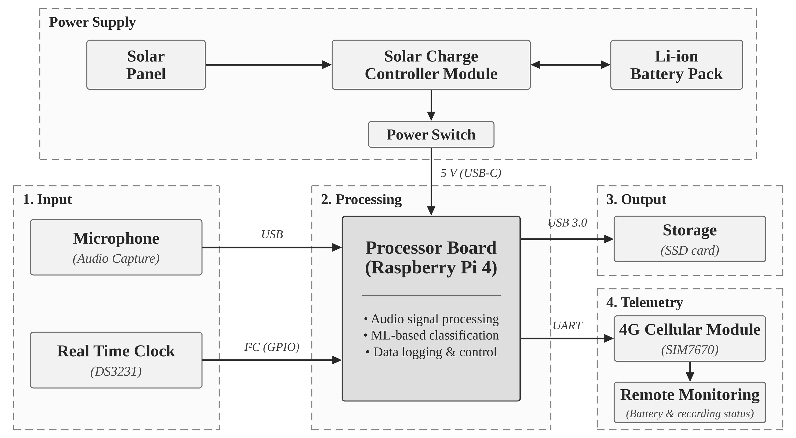
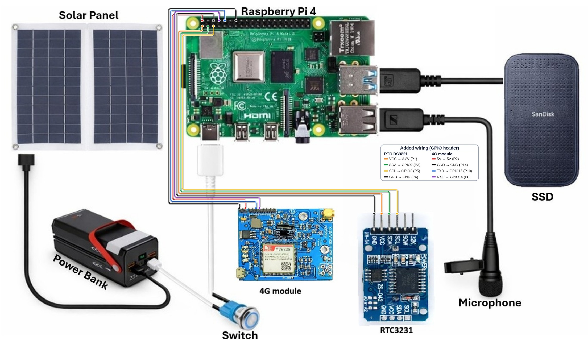
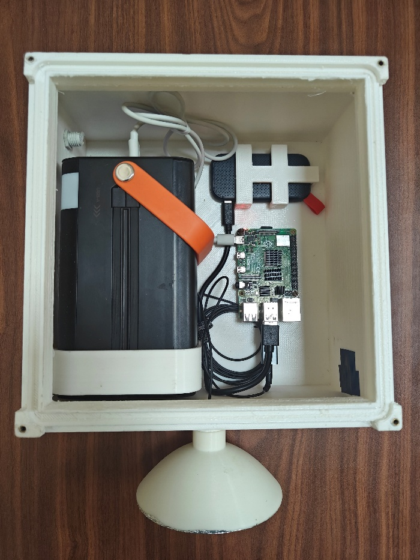
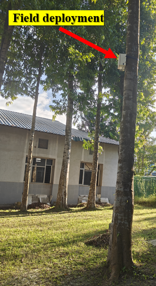
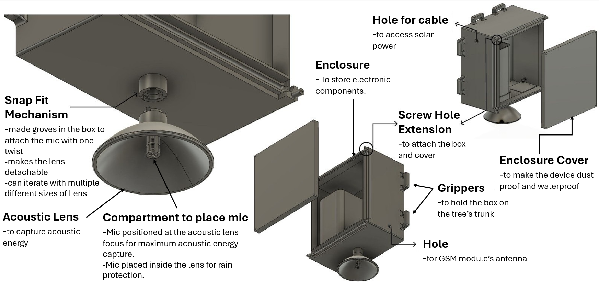
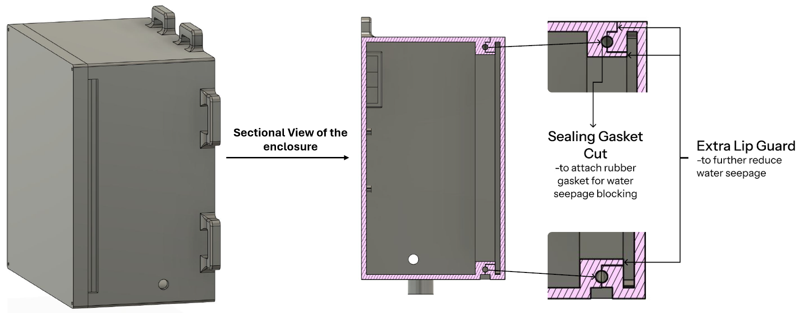
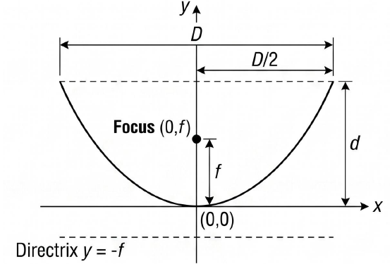
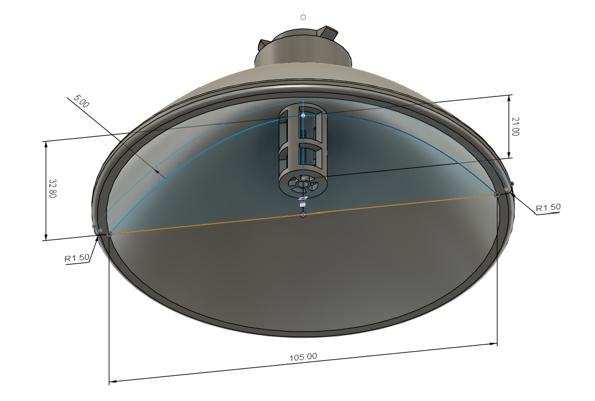

By the end of this chapter, you should be able to
- Describe the main components of an autonomous soundscape device.
- Explain Raspberry Pi, microphone, RTC, storage and telemetry roles.
- Understand power management and weather-resistant design.
- Explain the acoustic purpose of a parabolic reflector.
One-hour learning plan
Part 1 · Guided reading — 15 minutes
System architecture
The example device uses a Raspberry Pi 4 for audio acquisition, processing, storage and system control. A Sennheiser USB microphone captures ambient sound.
Timing, storage and communication
A DS3231 real-time clock provides timestamps and retains time during power interruption. A 2 TB SSD stores audio. A SIM7670 4G modem can transmit recording and battery status.
Power and field protection
A solar panel and charge controller support battery charging. The enclosure protects electronics from rain, dust and humidity.
Parabolic acoustic lens
A parabolic reflector concentrates incoming sound toward a microphone at its focal point. For diameter D and depth d, focal length f = D²/(16d). The supplied design uses D = 105 mm and d = 32.8 mm, giving f approximately 21 mm.
Device design: figures from the supplied hardware material
The following diagrams and photographs are reproduced from the hardware document supplied for this course. They are included as learning material for examining the actual device architecture and field deployment.








Part 2 · Practical activity — 30 minutes
Trace the device architecture
- Draw a block diagram showing microphone, Raspberry Pi, RTC, SSD, 4G modem and power subsystem.
- Label audio, timing, storage, telemetry and power paths.
- Calculate focal length for D = 105 mm and d = 32.8 mm using f = D²/(16d).
- Identify two field failure points and preventive measures.
Part 3 · Reflection and knowledge check — 15 minutes
Reflection prompt
What trade-offs arise when designing a device for long-term unattended operation in a rainforest?